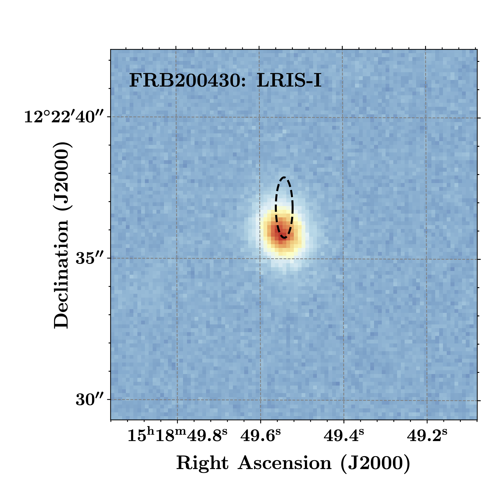

FRB 20200430A
Image from Heintz et al., 2020, ApJ, 903, 152
Summary
- Detected by: ASKAP-ICS
- FRB coordinates (RA, Dec): 15:18:49.54 +12:22:36.8 (J2000)
- Host coordinates (RA, Dec): 15:18:49.52 +12:22:35.8 (J2000)
- Redshift: 0.1608
- Observed DM: 380.0 pc cm-3
- Repeating: No
- References: Heintz et al., 2020, ApJ, 903, 152;
Bhandari et al., 2021 (ArXiv: 2108.01282)
Host galaxy properties
| Quantity | Measured value | Unit |
|---|---|---|
| Stellar mass | (0.21 ± 0.11) × 1010 | M⊙ |
| Star-formation rate | 0.26 ± 0.08 | M⊙/yr |
| E(B-V) | 0.31 ± 0.20 | mag |
| Mass-weighted age | 689.5 | Myr |
| Absolute r-band mag. | -18.25 ± 0.05 | mag |
| u - r color (rest-frame) | 2.08 ± 0.30 | mag |
| Half-light radius | 1.64 ± 0.53 | kpc |
| FRB offset from galaxy center | 1.7 ± 2.2 | kpc |
Emission line fluxes
| Emission line | Measured value |
|---|---|
| Hα | 4.27 ± 0.15 |
| Hβ | 1.15 ± 0.21 |
| [OIII] λ 5007 | 1.17 ± 0.25 |
| [NII] λ 6584 | 2.02 ± 0.20 |
Photometry
| Telescope | Filter (eff. wavelength) | Magnitude |
|---|---|---|
| Pan-STARRS | g (481 nm) | 22.16 ± 0.08 |
| Pan-STARRS | r (617 nm) | 21.51 ± 0.06 |
| Pan-STARRS | i (752 nm) | 21.16 ± 0.04 |
| Pan-STARRS | z (866 nm) | 20.91 ± 0.07 |
| Pan-STARRS | y (962 nm) | 20.67 ± 0.18 |